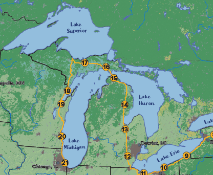
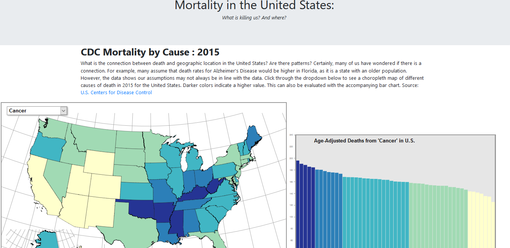
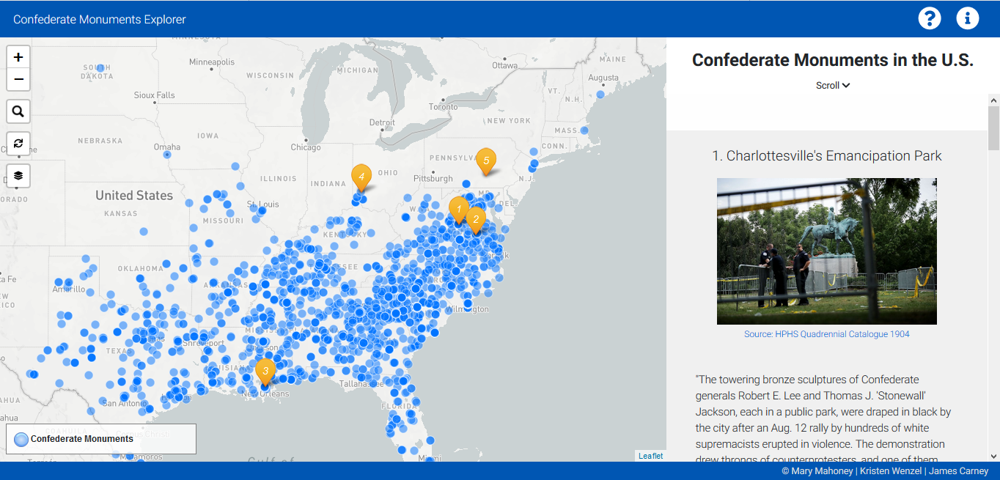
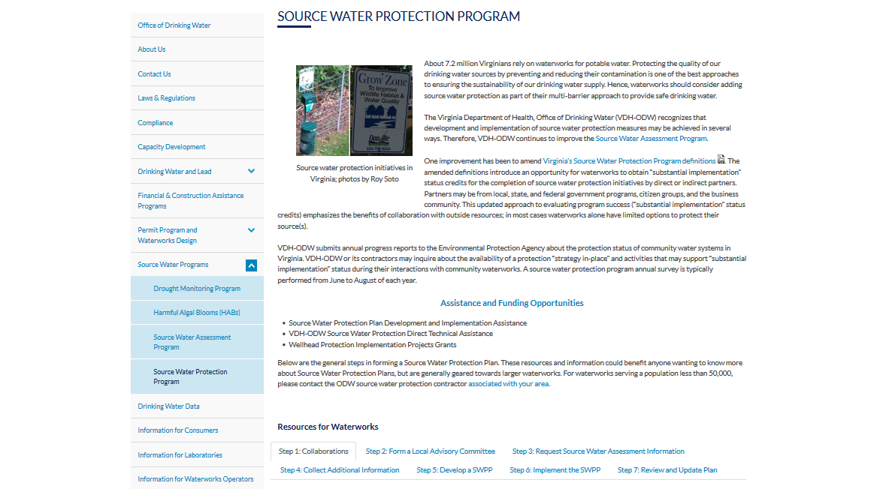
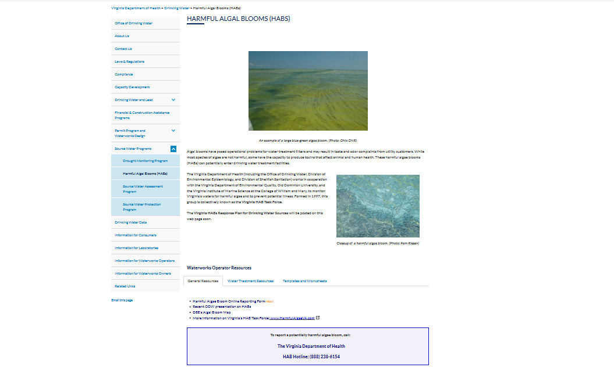
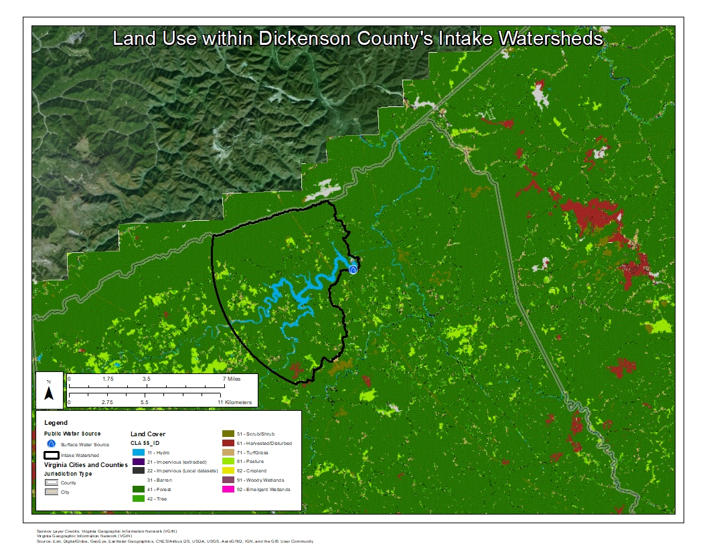

Mary Mahoney
Geographic Information Systems Professional
Portfolio

Bike Route with Shaded Relief

Mortality in the U.S. using d3

Confederate Monuments Web Application

VDH-ODW Source Water Website Creation

VDH-ODW Harmful Algae Bloom Website Creation

Database Project: Harmful Algae Blooms and Land Use